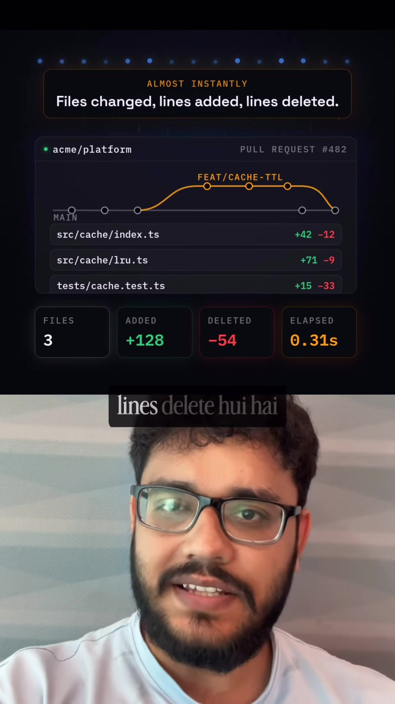
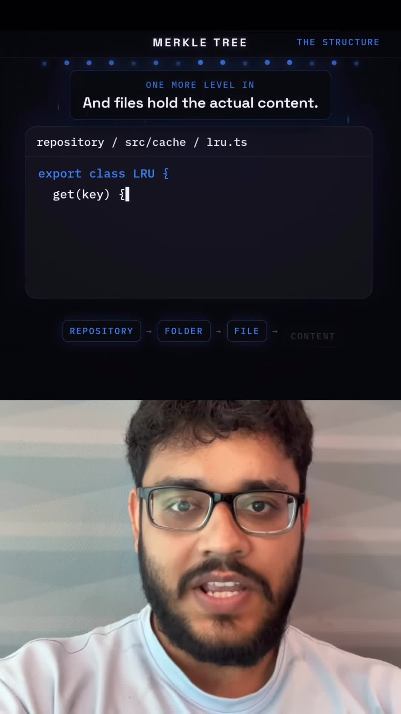
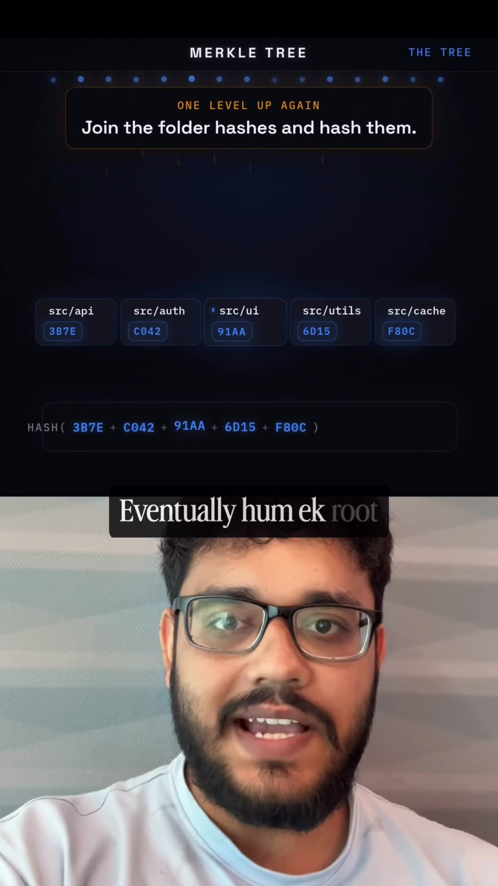
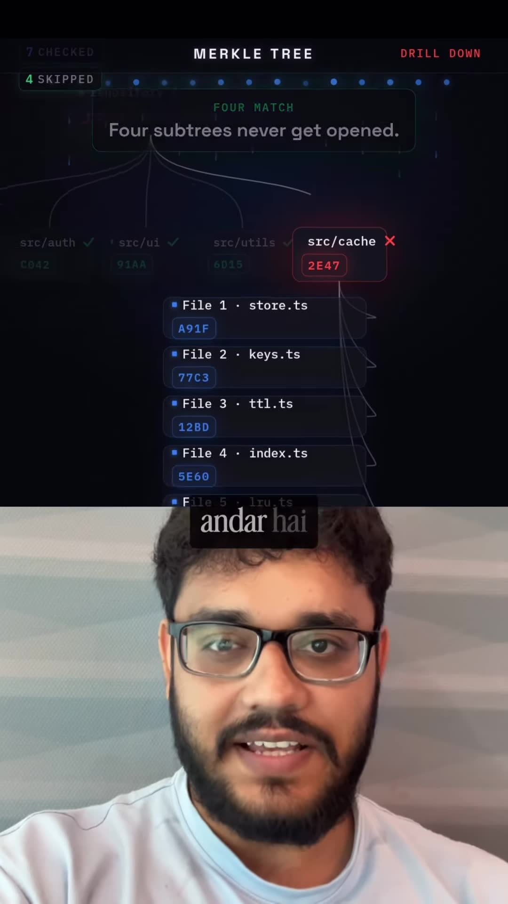

Executive Summary
In massive software repositories containing tens of millions of lines of code across hundreds of thousands of files (such as the Linux kernel, Chromium, or monorepos at Meta and Google), creating a Pull Request with a 2-line fix renders the exact changed files and line diffs almost instantaneously on GitHub.
If Git naively scanned every file in branch A against every file in branch B line-by-line, diffing would require hours of heavy disk I/O and CPU compute. Instead, Git structures commits, directories, and files as a Merkle Tree (cryptographic hash tree). By comparing cryptographic digests from the root downward, Git prunes 99.9% of unchanged subtrees in $O(1)$ time, isolating exact modifications in $O(\log N)$ steps.
Core Visual Demonstrations




How Git Structures a Merkle Tree
A Merkle tree is an inverted tree structure where leaf nodes contain cryptographic hashes of underlying data blocks, and every non-leaf node contains the hash of its concatenated children:
- Leaf Nodes (Blobs): Each file's raw content is passed through SHA-1 (or SHA-256). For example,
lru.tsproduces hashA8F3.... If even a single comma changes, the entire hash changes completely (avalanche effect). - Intermediate Nodes (Trees): A directory is represented as an array of tuples:
[mode, filename, child_hash]. Hashing this sorted array produces the directory's tree hash (e.g.src/cache/produces3B7E...). - Root Node (Commit): Top-level directories roll up into a single Root Hash representing the entire repository state at that exact commit.
The Subtree Pruning Diff Algorithm
When GitHub calculates a Pull Request diff between Commit $V_1$ (Root $R_1$) and Commit $V_2$ (Root $R_2$):
function diffTrees(TreeA, TreeB):
if TreeA.hash == TreeB.hash:
return [] // IDENTICAL! Entire subtree pruned in O(1) time.
for each child in TreeA and TreeB:
if child.is_file:
if childA.hash != childB.hash:
runMyersDiff(childA, childB) // Compute line-level diff
else:
diffTrees(childA, childB) // Recurse only down differing branchExample Execution:
- GitHub compares Root $R_1$ vs Root $R_2$. The hashes differ, so it opens the top-level directory entries.
- Top-level has 5 folders:
src/api/,src/auth/,src/ui/,src/utils/,src/cache/. src/api/has identical hash in both commits: SKIPPED completely (never reads any of its 5,000 files).src/auth/,src/ui/,src/utils/: hashes match: SKIPPED completely.- Only
src/cache/has a mismatched hash. Git recurses downsrc/cache/. - Inside
src/cache/, 4 out of 5 files have identical hashes. Git ignores them and runs line-level diffing (Myers diff) on the single altered file.
Beyond Git: Where Merkle Trees Power the World
- Distributed Databases (DynamoDB, Cassandra): Anti-entropy replica synchronization uses Merkle trees over gossip protocols to find diverging row replicas across data centers with minimal network transfer.
- Blockchain & Cryptocurrencies (Bitcoin, Ethereum): Light clients verify whether a specific transaction is included in a block using Merkle proof paths without downloading the 500GB ledger.
- Secure Package Registries & Certificate Transparency: Cryptographic verification that binary packages or SSL certificates have not been tampered with.